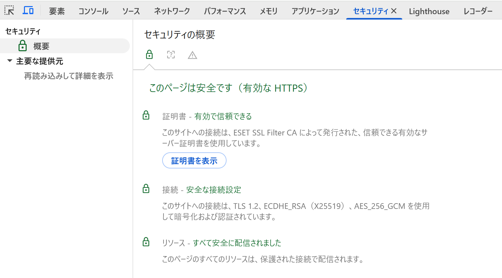

テクニカルSEO
基礎：HTML構造、1URL1コンテンツ、サイト構造：URL設計、内部リンク、クロール制御：robots.txt、サイトマップ、エラー・スパム対応、表示速度：ネットワーク／レンダリング／サーバー、Core Web Vitals、測定ツール、HTTPS
セキュリティ：HTTPS化
URLの先頭にあるHTTPSは、ブラウザとWebサーバー間の通信を暗号化する仕組みです。通信内容の盗聴・改ざんを防ぐHTTP（Hypertext Transfer Protocol）の安全版として普及しました。
HTTPS（HTTP Secure）
SSL/TLSプロトコルによる暗号化の上でHTTP通信を行う仕組み。通信データの暗号化、改ざんの検知、通信相手（サーバー）の認証という3つのセキュリティ上の役割を持ちます。日本国内でChromeがHTTPS経由で読み込んだページの割合は、2025年時点で95%に達しているとされています。
Google Search Central（公式ブログ、2014年）は、HTTPS化を検索のランキングシグナルとして使用すると発表しました。
ただしGoogle自身の説明によれば、HTTPSは全体の検索クエリの1%未満にしか影響しない軽量なシグナルであり、質の高いコンテンツなど他の評価要素と比べると影響は小さいとされています。とはいえ、HTTPSはユーザーの通信を保護する基本的な仕組みであり、現在ではほぼすべてのサイトで標準的に導入されています。
HTTPS化は、ランキングシグナルとしての意味だけでなく、次のような点でもサイト運営に関わります。
- 多くのブラウザで、HTTP接続のページに「保護されていません」といった警告が表示されるため、HTTPS化はユーザーの信頼確保につながる
- 通信を高速化する新しいプロトコル（HTTP/2やHTTP/3）は、HTTPS接続が前提となっている
- フォームでの個人情報送信など、ユーザーの信頼が特に重要なページでは必須の対応とされている
SSL/TLS証明書の期限切れや、証明書のドメイン不一致、HTTPSページ内にHTTPのリソース（画像・CSS・JavaScriptなど）が混在している場合、ブラウザにセキュリティ警告が表示され、ユーザーの離脱につながります。HTTPS化の設定後は、Chrome DevToolsなどで証明書・TLS接続・リソースの配信経路に問題がないか確認することが推奨されます。
